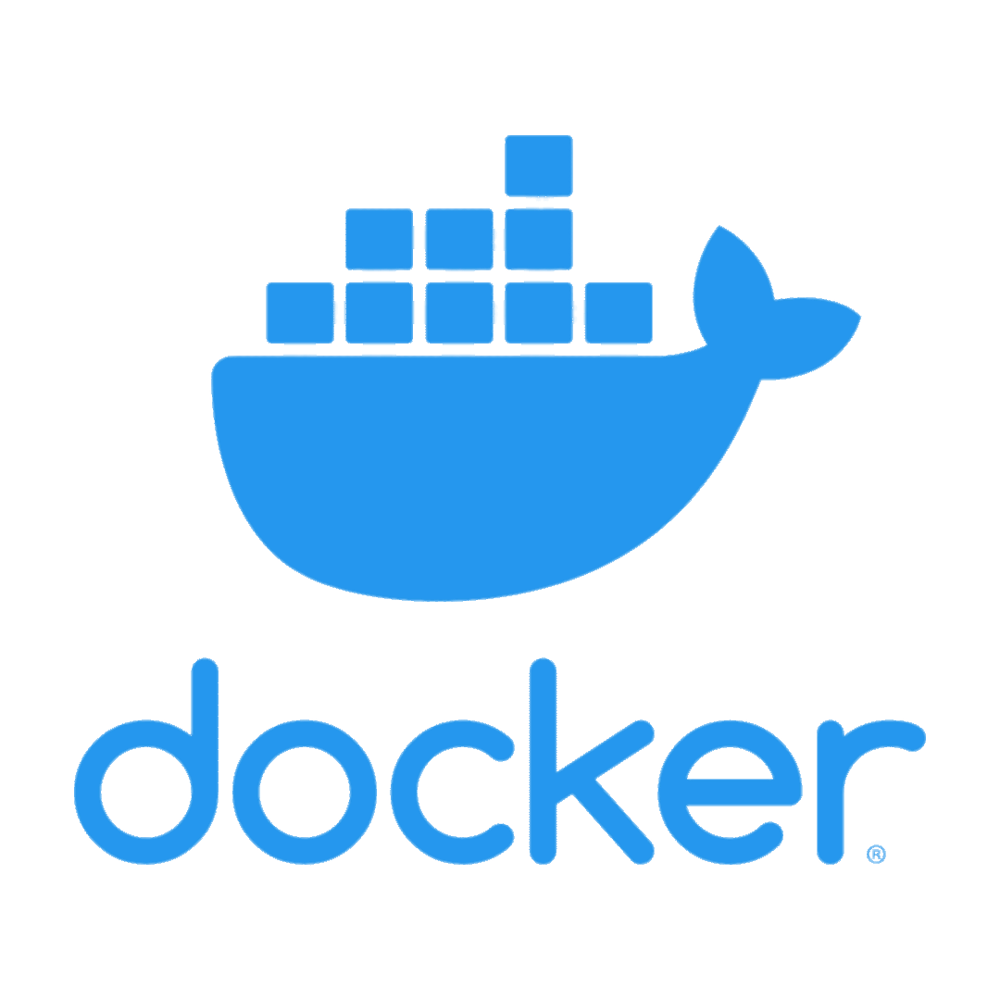
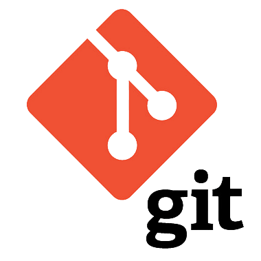

Crypto Trading Data Pipeline is a Dockerized data engineering project
that collects and serves market data for cryptocurrencies.
Apache Airflow 3.4 orchestrates two pipelines:
a per-minute collector and a daily incremental collector.
Recent data is stored in PostgreSQL, while the long-term history lives in partitioned Parquet files.
Pipelines include automatic retries, deduplication, and dynamic task mapping (one task per trading pair).
A FastAPI service exposes candles and the latest price per coin.

This chess data project extracts, loads, and transforms data from my Chess.com games
to showcase my data engineering skills using free tools:
Apache Airflow, Databricks Community Edition (working around its constraints), and dbt.
Rather than building an over-engineered, production-grade pipeline,
my focus is on clear code, sound architecture choices, and practical problem-solving.
To highlight versatility across stacks,
I implement the core transformations in both Databricks (Apache Spark) and dbt (PostgreSQL).
Pandas, Matplotlib, Seaborn, Folium
This is my first BI project.
Many choices in this project are debatable.
This was primarily a coding exercise.
I used a dataset on New York accidents to build my first "real" ETL job.
It was also my first experience handling NaN values,
where I attempted to recover missing New York county data using geographic coordinates, street names, and intersections.

Mistral LLM : Structured output, OCR, Prompting
Llama Index : Metadata, Reranking, Vector Storage
I built a comprehensive RAG system for construction contractual documents, optimizing retrieval through chapter-based chunking and metadata enhancement.
I also wrote an article explaining the challenges and the overall concept of my project.
Rubiks cube
scramble checker
Python list and basic
I had only been learning Python for a few months, and I was spending all my time on coding exercise platforms.
But solving problems just for the sake of solving them was starting to feel a bit tedious. I wanted to dive into a personal project to tackle "my own" problems.
Power BI
Several dashboards
using dynamic filters, DAX langage, KPI, maps,...